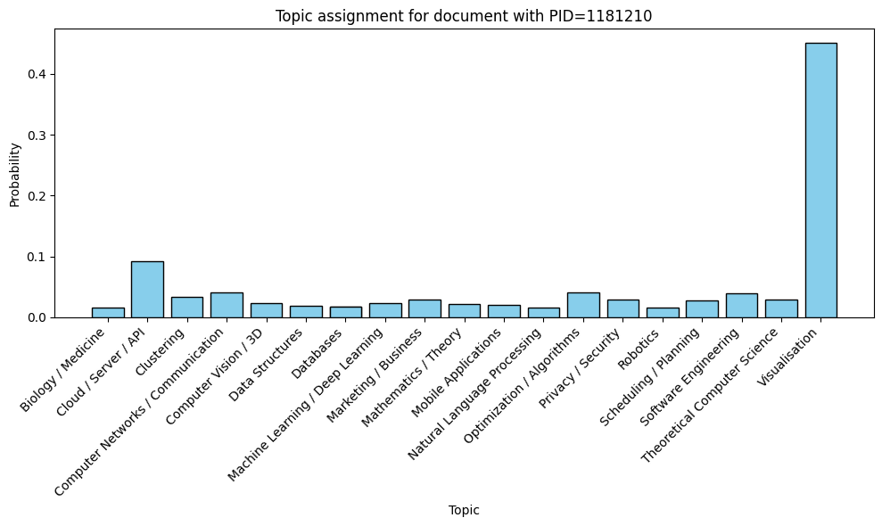
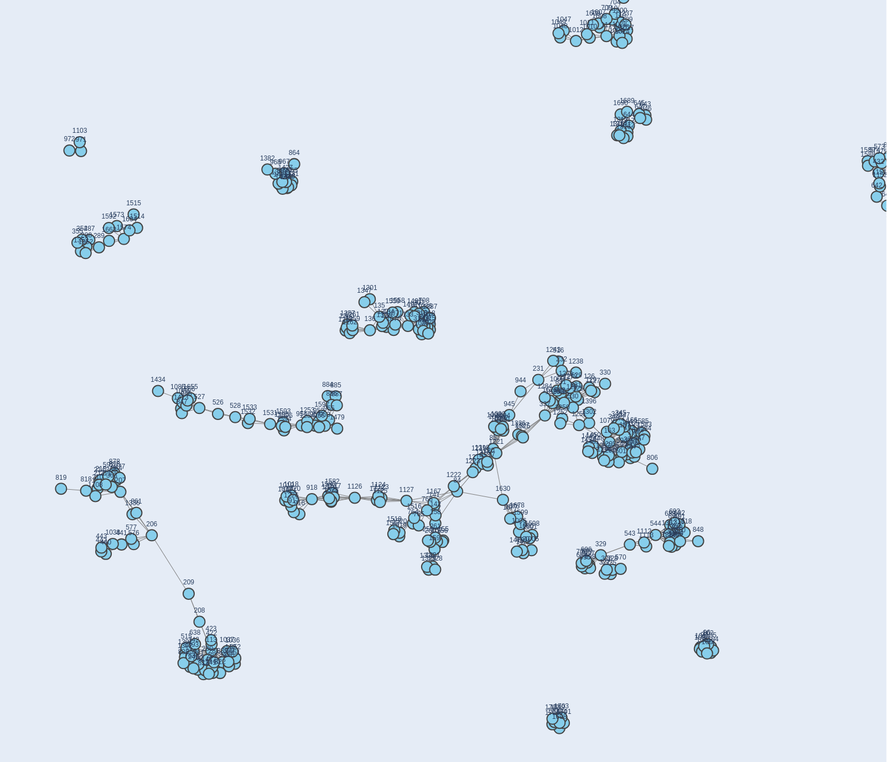
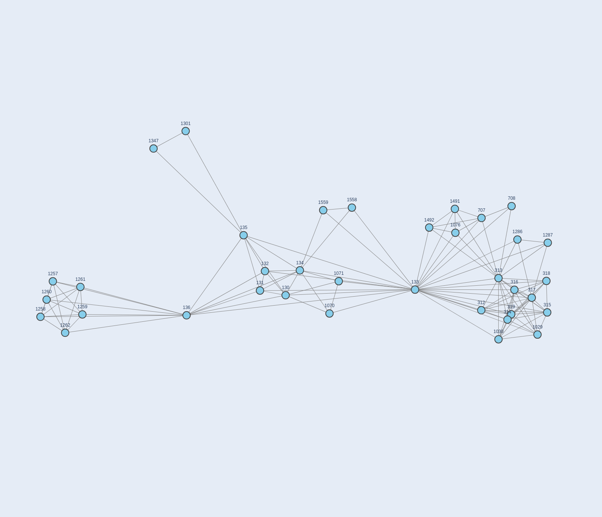
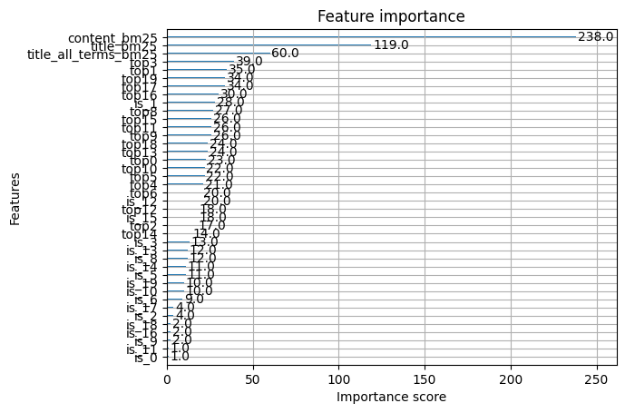

From Lexical to Personalized Search
Each retrieval mode builds directly on the one before it: the personalized search reranks the semantic search's results, which in turn is compared against the plain lexical baseline.
Standard and Semantic Search
The lexical baseline is a standard Elasticsearch query over each paper's title, authors, and abstract,
the kind of search a keyword-matching system would already provide. The semantic option instead applies
a general-purpose sentence-transformer model (all-mpnet-base-v2) to every paper's abstract
at indexing time, storing the resulting vector as a dense_vector field. At query time, the
same model embeds the search query, and a k-nearest-neighbor search over the indexed vectors, using an
L2-norm similarity, retrieves and ranks the most semantically related papers. Using sentence-transformer
embeddings for literature search this way is a relatively recent idea, with encouraging results already
reported in the medical-literature domain[1][6].
Topic Assignment
To build a usable research-interest profile for each author, we first need a compact representation of
what each paper is about. We use a zero-shot classification model
(facebook/bart-large-mnli[4]) to score every
paper against about twenty predefined topic categories, such as "Machine Learning / Deep Learning",
"Computer Vision / 3D", or "Natural Language Processing", by encoding the paper's title, abstract, and
keywords together with each candidate topic and comparing them in the model's embedding space. This
needs no labeled training data, since we can already use the pretrained model.

Averaging these topic-probability vectors across every paper an author has published gives us a single vector summarizing that author's research interests, which we store as their profile.
Coauthorship Graph
Alongside topical interests, we model collaboration directly: a graph where each node is an author and each edge connects two authors who have coauthored a paper together. Academic collaboration networks are known to exhibit high clustering and small-world structure[7], meaning authors tend to cluster into communities defined by shared topics of interest, so two authors close together in this graph are a reasonable proxy for two authors with related research interests. In the reranking step, we consider not just an author's direct coauthors but also collaborators up to three degrees of separation away.



Query Generation
Training a reranking model needs example (query, result, relevance) judgments, and we have no real search logs to draw them from. Instead, we simulate user behavior: for every keyword attached to an author's papers, we generate a synthetic query from that author, and score every paper in the dataset against it by the coauthorship distance between the querying author and the paper's authors, from 3 (the two have worked together directly) down to 0 (no connection at all). This mirrors the way session or shopping-cart data is used to train two-tower ranking models in industrial settings[2][3], substituting collaboration distance for the click or purchase signal we don't have.
Model Training
Following the approach described by Jakob[5] for
learning-to-rank with Elasticsearch, we train an XGBoost ranking model (XGBRanker) on the
synthetic judgments above. Each document is featurized with its lexical relevance to the query
(BM25 scores over content and title), a one-hot encoding of its dominant topic, and the querying
author's preference score for each topic.

Once trained, the model can rescore any semantic search's results at query time: we look up the querying author's topic-preference profile and feed it, along with the candidate documents, to the model to produce the final personalized ranking.